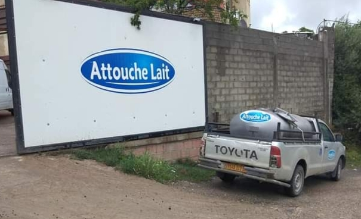
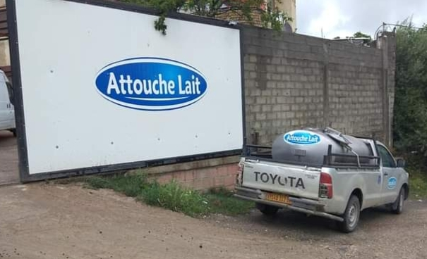

.jpg) 

L'entreprise ATTOUCHE LAIT a été créée en 2018 mais ses origines remontent à 2012 dans le cadre de l'activité de l'élevage de bovins. La particularité de cette entreprise devenant ensuite une SARL le 16/12/2021 réside dans le fait qu'elle adhère totalement au programme national de développement de la filière lait pour d'une part, accroitre le niveau de production de lait crû, et d'autre pour participer pleinement aux orientations des instances gouvernementales dans l'intégration de lait de vache pasteurisé conditionné en sachet afin de satisfaire un tant soit peu les besoins des populations Cette initiative louable présente un intérêt économique national certain dans l'optique de diminuer les importations effrénées de poudre de lait. Entre autre, la SARL est partie prenante totalement dans la création du «GIC groupement d'intérêt commun dont Mr SAIDANI Youcef est lui-même gérant et ce pour assurer et assister les éleveurs dans l'approvisionnement en aliment de bétail .
-Lait de vache en sachet
-Raib
-fromages pâtes molles
La dominance de production se situe dans le lait de vache conditionné représea production globale